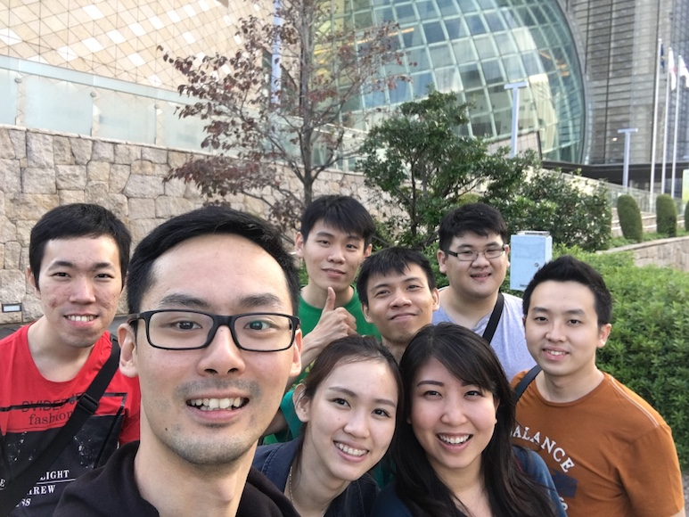

This is my first time writing a blog, and also my first time going to Japan. It's been almost a year since I came back from Japan. The country that I've been dreaming about, totally worth it. If you never go to Japan, put it in your first list, or second, or third (just put it in your list).
Of course, I'm not traveling alone.

I'm traveling from 14 October 2015 until 23 October 2015 (9 days in total), and it such a wonderful experience. Here, I just want to share a little guide about everything you'll need when you want to go to country of Sakura.
Visa
Yes, I'm an Indonesian, and recently there was this Visa Waiver Program in Indonesia. It is basically a free visa program, you don't need a visa to go to other country. For now, in my country, only Japan has registered to this program.
You still need a passport though, but it has to be this new kind of passport, e-passport. Register an e-passport is easy (don't count my past experience creating one), and the procedural still the same as the old one. The differences are the price (you can check it here), and the registration place. Not all immigration office in Indonesia support e-passport registration (by the time I wrote this post).
If you already have e-passport, just go to Japan Embassy and register a Visa Waiver Program. It is as simple as filling a one page form (you can read the instruction here). And yes, you're now eligible to enter Land of the Rising Sun!
Ticket
Ticket depends on your budget, I will be discussing the budget at the end of this post, but I will share my experience looking for tickets.
I'm flying from Jakarta, Indonesia, and there are a lot of flight services that will bring you to Japan. There are only 2 local flights service though, AirAsia and Garuda Indonesia. But, there are a lot of International flight services, JetStar, Japan Airlines, ANA, Cathay Pacific, Malaysia Airlines, you name it.
If you are going for the first time, and traveling to big cities like Osaka, Kyoto, and Tokyo, the best flight plan for me is arrived at Osaka and departed from Tokyo.
As I said, it depends on your budget. Since this is supposed to be a low budget trip, we choose AirAsia. For the sake of promo ticket, I bought it a year before!
Accommodation
Airbnb is the most popular accommodation rent services for now. You can find any kind of rooms from local people with a affordable prices. Be it for 2 people, or 8-10 people.
We use Airbnb for all accommodations while in Japan. Booking was easy, the guide, and the host was nice (just one that made us speechless).
Some tips if you want to use Airbnb as your accommodation service.
- Find the best price, but don't forget to look at their reviews. The more reviews, the more you can rest assured (and rest well).
- Since Airbnb didn't show the exact location from their places (only circle area in maps), you need to be careful when choosing your places. If you unlucky, the location shown in preview will be far away from expected. Back to the first one, reviews determine everything.
- Close to X station, only 10 minutes walk, doesn't mean it really close enough. Imagine you are walking with your luggage and you need to find their places, exhausting (trust me).
Other alternative from Airbnb, of course you can choose a hotel to stay in. It all depends on your budget. Oh, there are another alternatives for low budget accommodation, Hostel. You can search hostel, and you can find a lot of it in Japan. And the prices are also affordable too.
Plan
Don't ever underestimate planning, even though it is not being executed. Research what kind of places do you want to go, how many city do you want to go, even better if you already know where do you want to eat.
Wi-Fi
If you are uncertain with your language skills, and not a B blood-type person (if you know what I mean), Internet is your friend.
Japan-wireless is a pocket wi-fi rental service. They also offer a SIM card with internet, but I suggest a pocket wi-fi if you are traveling with a group.
You can rent it online, and they will drop it at post office in airport. Show your receipt, pick it, and you got the whole world in your hand. The pocket wi-fi will last for about 4 hours, and they will give you a portable charger, so it will last about 10 hours or more in total. You can also bring your own portable charger if you want, they use micro usb cable charger.
Returning is also easy, just drop it at the post office in airport. They already give you a big envelope for it, complete with recipient detail. Don't forget to fill the rent form with detail of the airport where you will drop the pocket wi-fi.
JR Pass
Japan Railway Pass, basically, it is a train pass that valid for x-days, and you can get a "free ride" for train that pass through JR-line.
In every city, there are a few of JR-line, so you still have to buy a regular ticket pass (will be discussed in Transportation section). JR Pass will be very useful if you travel to other city.
Buy JR Pass or not? It depends on your plan, whether you traveling between cities or not. Since my route plan was Osaka - Kyoto - Tokyo, it is better for me not to buy JR Pass.
Transportation
You can find train, bus, taxi, and even bicycles as a public ride. The most common public ride is train. Most people will use the train to go to work too, so be wise when picking a time to depart.
You will need a single train ticket for a ride, or you can use train card (Pasmo, Suica, or Icoca). Now you can use all train card in every city, it is not possible before.
Picking a train line is easy, but you will have a hard time at the first time. If you pick a wrong line, there is nothing to worry about, you cannot go outside Japan with a train 😄. Picking a wrong line will result in more expensive route.
Tips: Use Google Maps or NaviTime apps, they will show you the best route for you. Pretty accurate, you only need some adaptation the first time you are there.
Budget
Maybe this is the section you are waiting for.
I'll list my budgeting in ¥, and the currency I used at that time was
1 ¥ = Rp. 123,00
| No | Things | Total |
|---|---|---|
| 1 | Ticket AirAsia (CGK-KIX) | 13,162 ¥ |
| 2 | Ticket AirAsia (HND-CGK) | 17,952 ¥ |
| 3 | JR Special Rapid Train (Osaka-Kyoto) | 560 ¥ |
| 4 | Hikari Train (Kyoto-Tokyo) | 13,062 ¥ |
| 5 | Universal Studio Japan (1 day pass) | 7,200 ¥ |
| 6 | Disneyland (1 day pass) | 6,900 ¥ |
| 7 | Tokyo Airbnb (per day for 8 people) | 20,325 ¥ |
| 8 | Osaka Airbnb (per day for 8 people) | 23,492 ¥ |
| 9 | Kyoto Airbnb (per day for 8 people) | 23,566 ¥ |
| 10 | 3 Pocket wi-fi (9 days) | 18,202 ¥ |
| 11 | Total train transportation in Osaka (3 days) | 3,820 ¥ |
| 12 | Total train transportation in Kyoto (2 days) | 1,930 ¥ |
| 13 | Total train transportation in Tokyo (3 days) | 5,577 ¥ |
From what I've heard, that Japan is a beautiful country, it also a country full of nice people, although they cannot speak English. I will definitely go back again. There are still a lot of city that I need to go in Japan. またね!
I will cover up my journey for each city (Osaka, Kyoto, Tokyo) in another post.